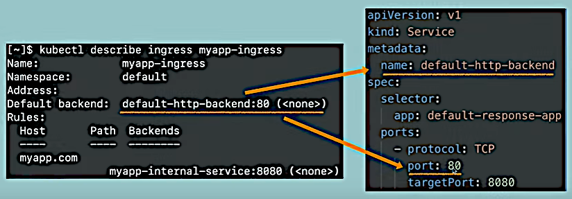
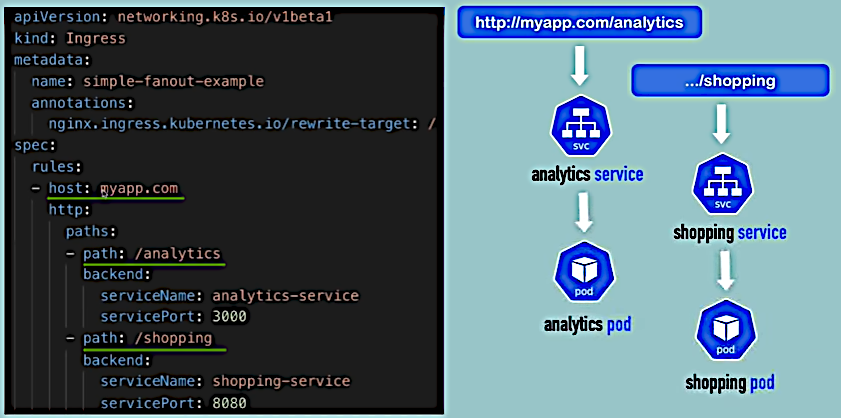
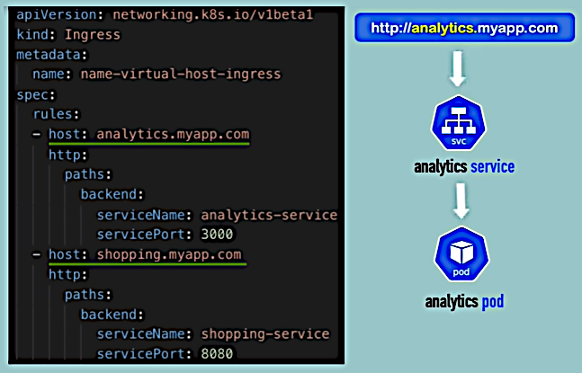
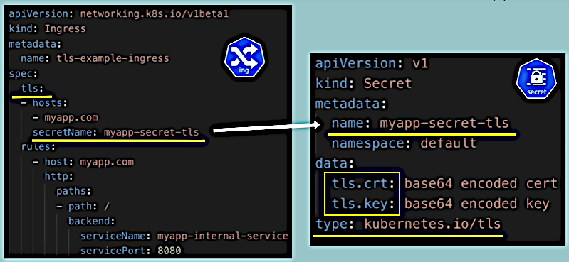

K8s Ingresses
K8s documentation: Ingress and Ingress Controllers.
A deployment with a UI application Pod and an external service that is accessible by the HTTP IP address and the port is good for prototyping. In the final project we want it to be accessed by the domain name and HTTPS protocol.
With an Ingress we use an internal Service and isolate the rest part of the application from communication outside the cluster.
First, consider the setup with the external Service:
Then introducing an Ingress. For that we change the service type from external (LoadBalancer)
to internal (ClusterIP, by default):
paths: section defines the paths inside the web-application. Here HTTP protocol is used. HTTPS
protocol will be introduced later in the course. Note that there's no nodePort in the internal
Service.
Now let's look at the host section.
host: myapp.com:
Just creating an Ingress component is not enough for the Ingress routing rules to work. In addition we need an implementation for the Ingress. This implementation is called Ingress Controller. Ingress Controller is a Node or a set of Nodes that work in the K8s cluster and actually evaluate and process the Ingress rules.
There are multiple implementations of the Ingress Controller, see here for the list of Ingress Controllers that is supported by Kubernates and by the third parties.
We'll be using NGINX Ingress Controller (GitHub | Bare-metal considerations).
Cloud service providers, like AWS, Google Cloud, Linode, if they have out-of-the-box K8s solutions, provide their own load balancers as entrypoints.
If we deploy the cluster on the Bare Metal we need to configure entrypoints ourselves. An entrypoint is a separate server (a Proxy Server) with public IP addresses and ports.
In both cases no Service inside the cluster is exposed outside.
$ minikube addons enable ingress
- Using image docker.io/jettech/kube-webhook-certgen:v1.5.1
- Using image k8s.gcr.io/ingress-nginx/controller:v0.44.0
- Using image docker.io/jettech/kube-webhook-certgen:v1.5.1
* Verifying ingress addon...
* The 'ingress' addon is enabledThis automatically starts the K8s Nginx implementation in Ingress Controller (GitHub | Bare-metal considerations). This implementation may be safely used in production environment as well.
$ kubectl get pods -n ingress-nginx
NAME READY STATUS RESTARTS AGE
. . .
ingress-nginx-controller-5d88495688-zvlp5 1/1 Running 0 7m10sWe will create Ingress rule for the K8s Dashboard component.
$ kubectl get ns
NAME STATUS AGE
. . .
kubernetes-dashboard Active 5d23hIn Minikube it's installed by default but is not accessible externally.
$ kubectl get all -n kubernetes-dashboard
NAME READY STATUS RESTARTS AGE
. . .
pod/kubernetes-dashboard-968bcb79-whw6n 1/1 Running 11 5d23h
. . .
NAME TYPE CLUSTER-IP EXTERNAL-IP PORT(S) AGE
. . .
service/kubernetes-dashboard ClusterIP 10.104.85.224 <none> 80/TCP 5d23h
. . .As we can see, the Service is internal (with type ClusterIP).
Creating an Ingress rule:
ingress_demo$ vi dashboard-ingress.yamlAdd the content of the file
dashboard-ingress.yaml.
$ kubectl apply -f dashboard-ingress.yaml
Warning: networking.k8s.io/v1beta1 Ingress is deprecated in v1.19+, unavailable in v1.22+; use networking.k8s.io/v1 Ingress
ingress.networking.k8s.io/dashboard-ingress createdSee here for the new format example. Now using the old one in order to save the time.
$ kubectl get ingress -n kubernetes-dashboard
NAME CLASS HOSTS ADDRESS PORTS AGE
dashboard-ingress <none> dashboard.com 192.168.49.2 80 8m43sSo we see that the address was assigned. Then we add a local domain name resolution rule:
sudo vi /etc/hosts and add the line 192.168.49.2 dashboard.com there. Then in a browser
directly on the host machine, http://dashboard.com/ shows the dashboard (see
here how it looks like). Of cause this doesn't
work externally.
$ kubectl describe ingress dashboard-ingress -n kubernetes-dashboard
Name: dashboard-ingress
Namespace: kubernetes-dashboard
Address: 192.168.49.2
Default backend: default-http-backend:80 (<error: endpoints "default-http-backend" not found>)
Rules:
Host Path Backends
---- ---- --------
dashboard.com
kubernetes-dashboard:80 (172.17.0.5:9090)
Annotations: <none>
Events:
Type Reason Age From Message
---- ------ ---- ---- -------
Normal Sync 25m (x3 over 26m) nginx-ingress-controller Scheduled for syncDefault backend does not exist yet and if we request a wrong URL
http://dashboard.com/wrong-path we will see the default 404 page not found page. Again, this
works directly on the host machine. We can create an internal Service with name
default-http-backend in the kubernetes-dashboard namespace and a Pod that will give us a
custom error page:

The course doesn't tell how to open external access to the Dashboard. But this side step helped. The following new server was created:
server { listen 8050; listen [::]:8050; root /var/www/html; index index.html index.htm index.nginx-debian.html; server_name _; location / { proxy_set_header Host dashboard.com; proxy_set_header X-Real-IP $remote_addr; proxy_pass http://dashboard.com:80/; } }Now it works at http://192.168.1.500:8050/, where
192.168.1.500is the externally accessible Minikube host machine IP address.



tls.crt and tls.keys.